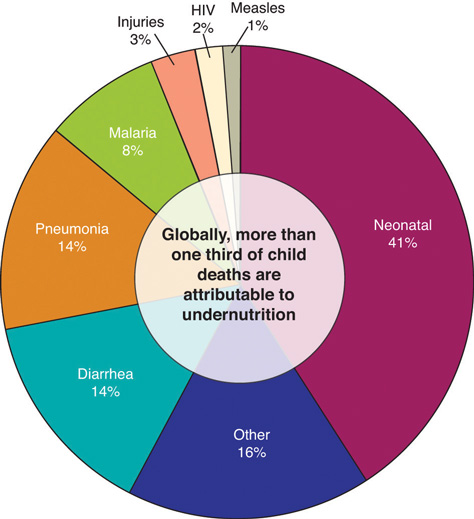

As you may recall, moderation refers to having the proper amount of a nutrient—having neither too little nor too much. A healthy diet incorporates all nutrients in moderation. Low protein intake has several health consequences, and a severe lack of protein in the diet eventually causes death. Although severe protein deficiency is a rare occurrence in children and adults in the United States, it is estimated that more than half of the elderly in nursing homes are protein-deficient. The Acceptable Macronutrient Distribution Range (AMDR) for protein for adults is between 10 and 35 percent of kilocalories, which is a fairly wide range. The percent of protein in the diet that is associated with malnutrition and its health consequences is less than 10 percent, but this is often accompanied by deficiencies in calories and other micronutrients. There is some scientific evidence that shows that people with diets low in animal protein (< 8 percent of caloric intake), who get adequate protein from plant-based foods instead, may actually have improved health and increased longevity. On the other hand, diets rich in animal-derived protein (> 30 percent of caloric intake) are associated with increased early mortality, kidney and liver malfunction, cardiovascular disease, colon cancer, and osteoporosis. In this section we will discuss the health consequences of protein intake that is either too low to support life’s processes or too high, thereby increasing the risk of chronic disease. In the last section of this chapter, we will discuss in more detail the personal choices you can make to optimize your health by consuming the right amount of high-quality protein.
Although severe protein deficiency is rare in the developed world, it is a leading cause of death in children in many poor, underdeveloped countries. There are two main syndromes associated with protein deficiencies: Kwashiorkor and Marasmus. KwashiorkorA syndrome of severe protein and micronutrient deficiency, characterized by swelling (edema) of the feet and abdomen, poor skin health, growth retardation, low muscle mass, and liver malfunction. affects millions of children worldwide. When it was first described in 1935, more than 90 percent of children with Kwashiorkor died. Although the associated mortality is slightly lower now, most children still die after the initiation of treatment. The name Kwashiorkor comes from a language in Ghana and means, “rejected one.” The syndrome was named because it occured most commonly in children who had recently been weaned from the breast, usually because another child had just been born. Subsequently the child was fed watery porridge made from low-protein grains, which accounts for the low protein intake. Kwashiorkor is characterized by swelling (edema) of the feet and abdomen, poor skin health, growth retardation, low muscle mass, and liver malfunction. Recall that one of protein’s functional roles in the body is fluid balance. Diets extremely low in protein do not provide enough amino acids for the synthesis of albumin. One of the functions of albumin is to hold water in the blood vessels, so having lower concentrations of blood albumin results in water moving out of the blood vessels and into tissues, causing swelling. The primary symptoms of Kwashiorkor include not only swelling, but also diarrhea, fatigue, peeling skin, and irritability. Severe protein deficiency in addition to other micronutrient deficiencies, such as folate (vitamin B9), iodine, iron, and vitamin C all contribute to the many health manifestations of this syndrome.
Kwashiorkor is a disease brought on by a severe dietary protein deficiency. Symptoms include edema of legs and feet, light-colored, thinning hair, anemia, a pot-belly, and shiny skin.
Source: Photo courtesy of the Centers for Disease Control and Prevention.
Children and adults with marasmusA syndrome of severe protein and energy deficiency, characterized by emaciation, poor skin health, and growth retardation. neither have enough protein in their diets nor do they take in enough calories. Marasmus affects mostly children below the age of one in poor countries. Body weights of children with Marasmus may be up to 80 percent less than that of a normal child of the same age. Marasmus is a Greek word, meaning “starvation.” The syndrome affects more than fifty million children under age five worldwide. It is characterized by an extreme emaciated appearance, poor skin health, and growth retardation. The symptoms are acute fatigue, hunger, and diarrhea.
Kwashiorkor and marasmus often coexist as a combined syndrome termed marasmic kwashiorkorThe combined syndrome of severe protein and energy deficiency, characterized by variable edema, emaciation, poor skin health, and growth retardation.. Children with the combined syndrome have variable amounts of edema and the characterizations and symptoms of marasmus. Although organ system function is compromised by undernutrition, the ultimate cause of death is usually infection. Undernutrition is intricately linked with suppression of the immune system at multiple levels, so undernourished children commonly die from severe diarrhea and/or pneumonia resulting from bacterial or viral infection (Figure 6.7). The United Nations Children’s Fund (UNICEF), the most prominent agency with the mission of changing the world to improve children’s lives, reports that undernutrition causes at least one-third of deaths of young children. As of 2008, the prevalence of children under age five who were underweight was 26 percent. The percentage of underweight children has declined less than 5 percent in the last eighteen years despite the Millenium Development Goal of halving the proportion of people who suffer from hunger by the year 2015.
Figure 6.7
Causes of death for children under the age of five, worldwide.
If you are interested in finding out more about world hunger and what is being done about it, visit the UNICEF website.
An explicit definition of a high-protein diet has not yet been developed by the Food and Nutrition Board of the Institute of Medicine (IOM), but typically diets high in protein are considered as those that derive more than 30 percent of calories from protein. Many people follow high-protein diets because marketers tout protein’s ability to stimulate weight loss. It is true that following high-protein diets increases weight loss in some people. However the number of individuals that remain on this type of diet is low and many people who try the diet and stop regain the weight they had lost. Additionally, there is a scientific hypothesis that there may be health consequences of remaining on high-protein diets for the long-term, but clinical trials are ongoing or scheduled to examine this hypothesis further. As the high-protein diet trend arose so did the intensely debated issue of whether there are any health consequences of eating too much protein. Observational studies conducted in the general population suggest diets high in animal protein, specifically those in which the primary protein source is red meat, are linked to a higher risk for kidney stones, kidney disease, liver malfunction, colorectal cancer, and osteoporosis. However, diets that include lots of red meat are also high in saturated fat and cholesterol and sometimes linked to unhealthy lifestyles, so it is difficult to conclude that the high protein content is the culprit.
High protein diets appear to only increase the progression of kidney disease and liver malfunction in people who already have kidney or liver malfunction, and not to cause these problems. However, the prevalence of kidney disorders is relatively high and underdiagnosed. In regard to colon cancer, an assessment of more than ten studies performed around the world published in the June 2011 issue of PLoS purports that a high intake of red meat and processed meat is associated with a significant increase in colon cancer risk.Chan, D. S., et al. “Red and Processed Meat and Colorectal Cancer Incidence: Meta-Analysis of Prospective Studies.” PLoS One 6, no. 6 (2011): e20456. doi: 10.1371/journal.pone.0020456. Although there are a few ideas, the exact mechanism of how proteins, specifically those in red and processed meats, causes colon cancer is not known and requires further study.
Some scientists hypothesize that high-protein diets may accelerate bone-tissue loss because under some conditions the acids in protein block absorption of calcium in the gut, and, once in the blood, amino acids promote calcium loss from bone; however even these effects have not been consistently observed in scientific studies. Results from the Nurse’s Health Study suggest that women who eat more than 95 grams of protein each day have a 20 percent higher risk for wrist fracture.Harvard School of Public Health. “Protein: The Bottom Line.” The Nutrition Source. © 2012 The President and Fellows of Harvard University. http://www.hsph.harvard.edu/nutritionsource/what-should-you-eat/protein/., Barzel, U. S. and L. K. Massey. “Excess Dietary Protein Can Adversely Affect Bone.” J Nutr 128, no. 6 (June 1, 1998): 1051–53. http://jn.nutrition.org/content/128/6/1051.long. Other studies have not produced consistent results. The scientific data on high protein diets and increased risk for osteoporosis remains highly controversial and more research is needed to come to any conclusions about the association between the two.St. Jeor, S. T. et al. “Dietary Protein and Weight Reduction: A Statement for Healthcare Professionals from the Nutrition Committee of the Council on Nutrition, Physical Activity, and Metabolism of the American Heart Association.” Circulation 104 (2001): 1869–74.
High-protein diets can restrict other essential nutrients. The AHA states that “High-protein diets are not recommended because they restrict healthful foods that provide essential nutrients and do not provide the variety of foods needed to adequately meet nutritional needs. Individuals who follow these diets are therefore at risk for compromised vitamin and mineral intake, as well as potential cardiac, renal, bone, and liver abnormalities overall.”St. Jeor, S. T. et al. “Dietary Protein and Weight Reduction: A Statement for Healthcare Professionals from the Nutrition Committee of the Council on Nutrition, Physical Activity, and Metabolism of the American Heart Association.” Circulation 104 (2001): 1869–74.
As with any nutrient, protein must be eaten in proper amounts. Moderation and variety are key strategies to achieving a healthy diet and need to be considered when optimizing protein intake. While the scientific community continues its debate about the particulars regarding the health consequences of too much protein in the diet, you may be wondering just how much protein you should consume to be healthy. Read on to find out more about calculating your dietary protein recommendations, dietary protein sources, and personal choices about protein.